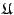
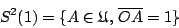
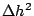
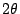

．作者任教於香港科技大學數學系
七、球面幾何和球面三角學
項武義
|
|
．作者任教於香港科技大學數學系 | ||
|
七、球面幾何和球面三角學
項武義 |
|
球面乃是空間中最完美勻稱的曲面。兩個半徑相等的球面可以用一個平移把它們疊合起來，而兩個半徑不相等的球面所相差者就是放大或縮小這種相似變換，由此可見本質性的球面幾何可以歸納到單位半徑的球面來研討。再者，在古典天文學的研討中，觀察星星的方向可以用單位球面上的一個點來標記它，而兩個方向之間的角度（亦即方向差）則相應于單位球面上兩點之間的球面距離 (spherical distance) 。這也就是為什麼古希臘天文學和幾何學總是合為一體的，而且古希臘的幾何學家對于球面三角學 (spherical trigonometry) 的投入程度要遠遠超過他們對于平面測量學的興趣，因為「量天的學問」才是他們所致力去理解者；它的確比丈量土地、計量財產等更引人入勝，是不？ 從現代的觀點來看，球面幾何乃是空間幾何中蘊含在正交子群的部分，而向量幾何則是空間幾何中蘊含在平移子群的部分，而且兩者又密切相關、相輔相成，例如向量運算都是正交協變的 (orthogonal covariant)，所以向量代數又是研討球面幾何的簡明有力的利器。
設 O 為球面的心，而單位球面 S2(1) 則是空間  中所有和 O 點的距離為 1 的點所成的點集，即：

它是以 O 為其定點的正交子群的一個軌道 (orbit) 。
球面極坐標：
設 {N,S} 是單位球面上給定的兩個互相對頂之點，在以 {N,S} 為定點子集的球面旋轉之下，每點的「緯度」保持不變，而其「經度」則隨著轉角而增加，如 [圖 7-1] 所示。設 P 是球面上相異于兩個極點者，令 是過
P 點的那條經線 (longitude arc)，
[ 圖 7-1 ]
若在空間選取正交坐標系，以球心為原點，以
為 z-軸的方向，以
為 x-軸的方向，其中 E 點乃是基準經線 [註]：由直接的微分計算可得 用上述弧長的微分式，不難証明經弧 乃是球面上連結 N, P 兩點的最短曲線（亦稱測地線 (geodesics)）。
【阿基米德定理】：半徑為 R 的球面面積等于
[註]：阿基米德 (Archimedes, 287-212 B.C.) 是公認的古希臘時代偉大的科學家和幾何學家，他一生有很多卓越的貢獻；而他最引以自豪者，首推上述定理及其簡潔的証明，這也就是遵照他本人的遺囑刻在他的墓碑上者。 証明：其証明的要點在于論証一個半徑為 R 的球面面積和一個高為 2R，半徑為 R 的圓柱面面積相等。而在他的墓碑上所刻劃的，就是如 [圖 7-2] 所示把兩者放在相切同高的位置。
[ 圖 7-2 ]
設想用一系列和柱面正交的平行平面，把兩個面都細分成很窄很窄的一圈圈。設相鄰兩個平行面之間的距離是 ，則柱面上的窄條（或圈）的面積等于 ，而在球面上的相應窄圈，雖然其寬度和長度會隨著 θ 而改變，但在 非常、非常小的時候，它可以看成如 [圖 7-3] 所示的圓台之側面：
[ 圖 7-3 ]
其中環長度是 ，亦即其環長的平均值是 ，而側面的寬度則為 ，所以其面積的高度近似值也是 （亦即可能的誤差肯定在  這種量級）。由此他就用 Eudoxus 所創的逼近原理証明了兩者的面積必然相等，而後者的面積顯然等于高為 2R，長為 的長方形面積，亦即 。 □ 球面三角形面積公式：
設 A, B, C 是球面上任取三點但不含對頂者，令
【定理 7.1】：在單位球面上，一個球面三角形
証明：如 [圖 7-1] 所示，由二個夾角為 θ 的經線所圍成的球面部分，其面積顯然和 θ 成正比（這是球面對以 N, S 為定點的旋轉對稱性的直接推論）。再者，當 時，其面積等于 （阿基米德定理）！所以上述以 θ 為夾角者（稱之為 spherical lune）的面積等于  。
[ 圖 7-4 ]
如 [圖 7-4] 所示，令 A', B', C' 分別是 A, B, C 的對頂者。用上述 spherical lune 的面積公式即得：
由此可得 亦即 [註]：上述具有基本重要性的球面三角形面積公式其實就是阿基米德球面面積公式的局部化和精細化。 球面三角形的疊合條件及等腰三角形定理：
設 A, B 是球面上任給兩點。在空間中和 A, B 等距的點集是直線段
【引理 7.1】：令 a, b, c 和 a*, b*, c* 分別是
[ 圖 7-5 ]
証明：我們只需要証明其中之一，其餘各式皆可同理類推。由
[圖 7-5] 所示，在大圓 上
,
，故有
【推論】： A.A.A. 也是一種球面三角形的疊合條件。
証明：設
【引理 7.2】：設
再者，上述之逆命題也成立。
[ 圖 7-6 ]
証明：如 [圖 7-6(i)] 所示，
同理亦有 [圖 7-6(ii)] 的情況和逆命題的証明留作習題。 □ 【定理 7.2】(Lexell)：設球面三角形 和 具有相等的定向面積，而 B', C' 分別是 B, C 的對頂點，則 B', C', A1, A2 四點共圓。
[ 圖 7-7 ]
証明：如 [圖 7-7] 所示：
所以 分別取 A=A1 和 A2，再對 【習題】：
|
對外搜尋關鍵字： ．阿基米德 ．Eudoxus ．Menelous ．Ptolemy ．Almagest |
|
|
|
|
（若有指正、疑問……，可以在此 留言 或 寫信 給我們。） |
|
|
|
EpisteMath (c) 2000 中央研究院數學所、台大數學系 各網頁文章內容之著作權為原著作人所有 |
| 最後修改日期：6/19/2004 |